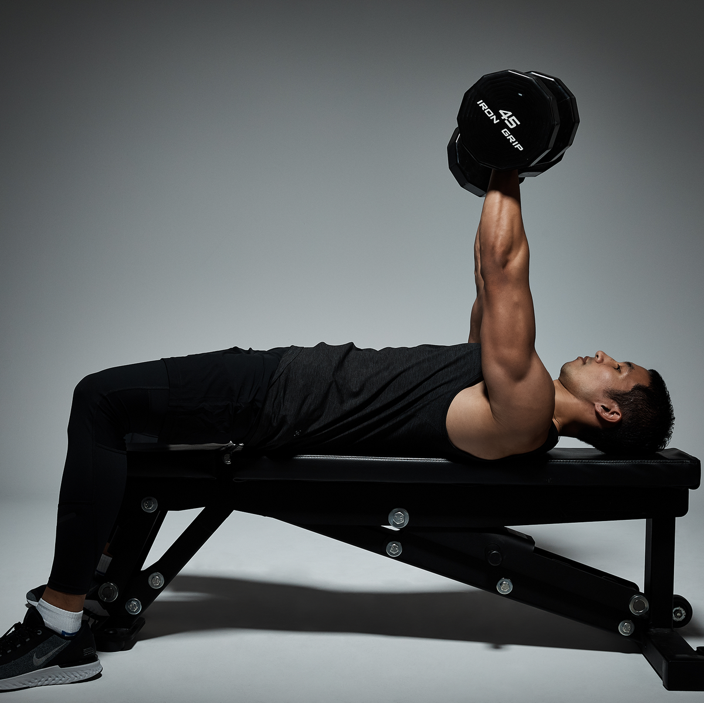
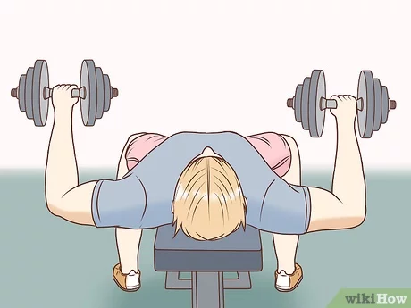
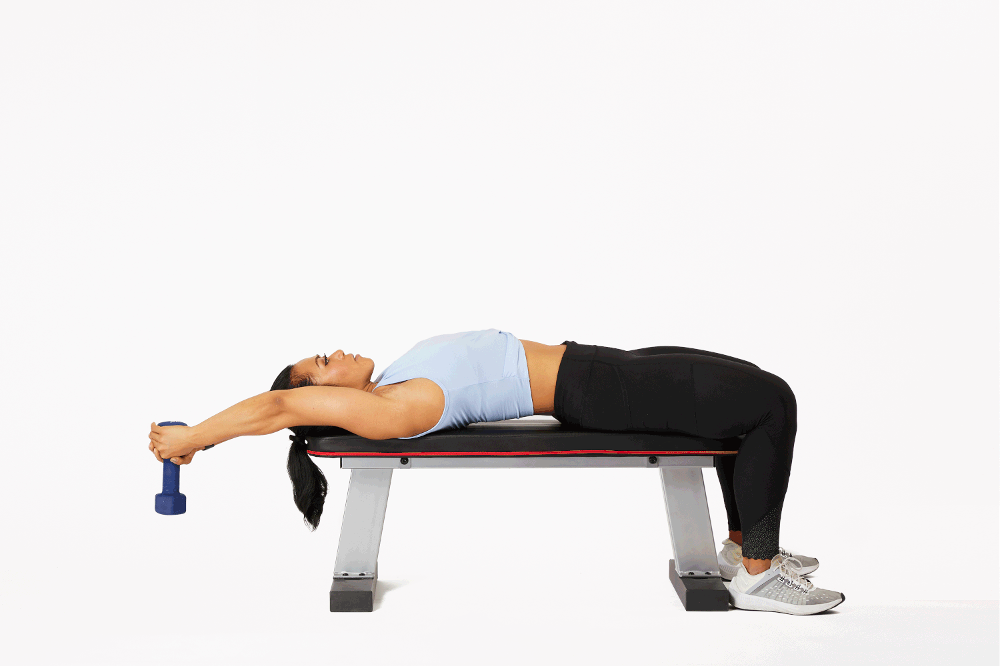
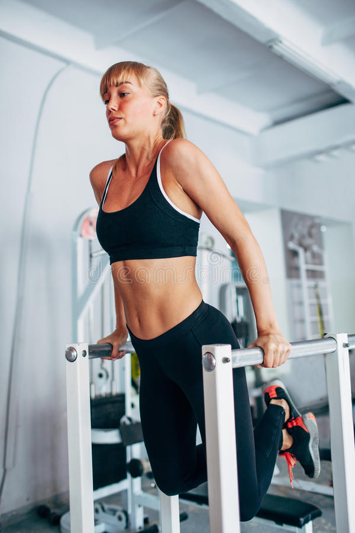
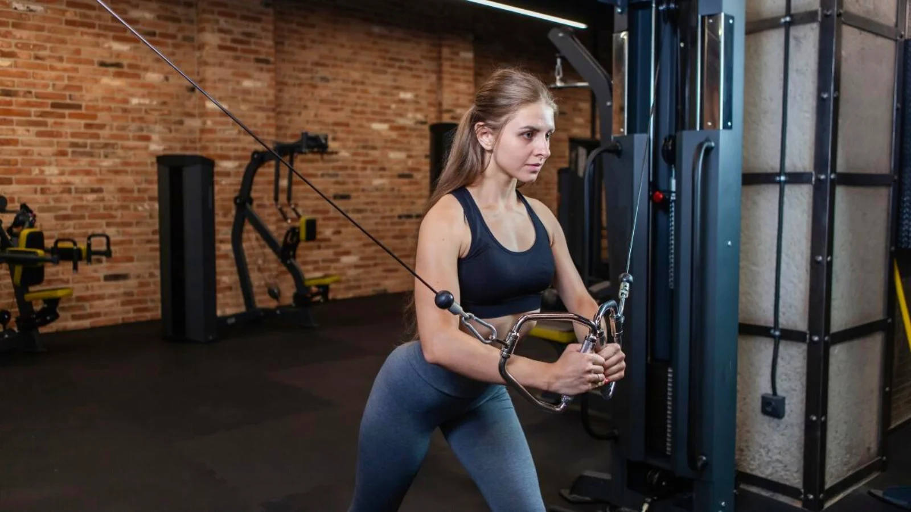

CHEST EXERCISES
Exercise 1: Pushups
The push-up builds both upper-body and core strength. It burns calories
and boosts metabolism by building muscle.
- Get down on all fours with hands slightly wider than shoulders.
- Straighten arms and legs.
- Lower body until chest nearly touches the floor.
- Pause, then push yourself back up.
- Repeat.
Exercise 2: Dumbbell Bench Press

A variation of the barbell press, this builds chest mass while improving
shoulder stability.
- Pick up dumbbells with a neutral grip and sit on the bench.
- Lay back and position weights near your chest.
- Press up to lockout.
- Lower slowly under control.
- Repeat for desired reps.
Exercise 3: Barbell Bench Press

This power-building move targets multiple upper body muscles and is a
staple for strength programs.
- Lie flat and grip bar just outside shoulders.
- Pinch shoulder blades and unrack the bar.
- Lower to sternum with control.
- Press back up using leg drive and core tension.
- Repeat for reps.
Exercise 4: Dumbbell Pull-Over

This exercise stretches and works both chest and lats, especially
effective on an incline bench.
- Grasp dumbbell and lay with upper back on bench, hips low.
- Extend arms overhead and lower dumbbell behind head.
- Keep elbows slightly bent and stretch chest.
- Return to start and repeat for reps.
Exercise 5: Chest Dip

Excellent for targeting the lower chest. Also works triceps and front
delts.
- Grip dip bars with neutral grip.
- Lower body until elbows are 90° or deeper.
- Press up powerfully and repeat.
Exercise 6: Cable Crossovers

Builds definition and stretches the chest fully with focused
contraction.
- Adjust cable handles to highest setting.
- Step forward with one foot and brace core.
- Pull arms forward in a wide arc until they meet at chest level.
- Pause and squeeze, then return with control.